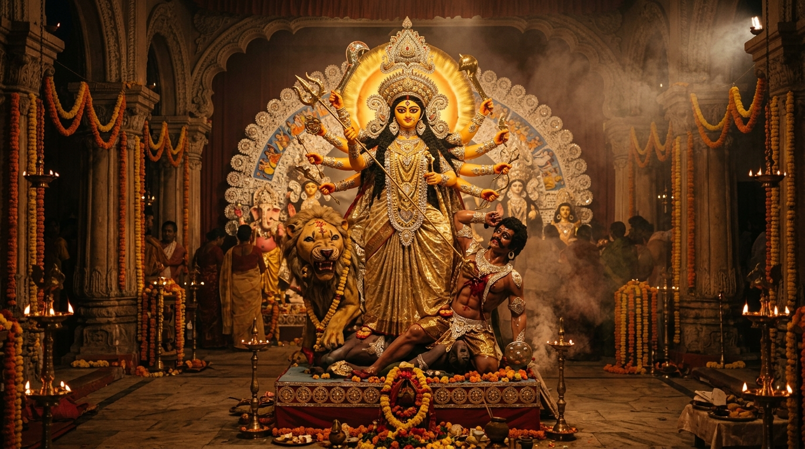

Immerse yourself in the majestic beats of the Dhak, the sacred resonance of the Shankha, radiant Pandals, and divine blessings of Maa Durga.
Experience the sanctum sanctorum of Maa Durga. Light the sacred ghee diya, blow the divine Shankha, ring temple bells, and offer fragrant pushpanjali flowers.

"ওঁ জয়ন্তী মঙ্গলা কালী ভদ্রকালী কপালিনী।
দুর্গা শিবা ক্ষমা ধাত্রী স্বাহা স্বধা নমোঽস্তু তে॥"
"O Mother Durga, embodiment of triumph, goodness, and cosmic energy, we bow to Your auspicious grace and divine protection."
Experience the complete traditional Bengali Durga Pratima in exquisite vector art. Explore Maa Durga with Her ten divine weapons, Her four divine children, the ferocious Lion, the vanquished Mahishasura, and the celestial Chalchitra archway.
"সর্বমঙ্গলমঙ্গল্যে শিবে সর্বার্থসাধিকে। শরণ্যে ত্র্যম্বকে গৌরি নারায়ণি নমোঽস্তু তে॥"
Maa Durga stands in the center as the supreme embodiment of divine feminine energy (Shakti). Her ten arms hold the ten weapons gifted by the gods to vanquish darkness and ignorance (Mahishasura), riding Her fearless golden Lion.
Explore the sacred tithis, muhurats, and timeless rituals from Mahalaya to Sindoor Khela on Bijoya Dashami.
Discover the most renowned architectural wonders, heritage Rajbari pujas, and creative masterpieces with live crowd estimates.
The heartbeat of Durga Puja is the thunderous Dhak. Tap the rhythm pads or trigger authentic bol patterns synthesized in real-time.
Craft personalized, elegant greeting cards to wish your friends, family, and loved ones a joyful Sharodotsav and Shubho Bijoya.
Join thousands of devotees globally in lighting the eternal flame of unity and book your festival prasadam pass.
Light a virtual lamp of hope, prosperity, and goodwill. Every click adds to the global celebration flame.
Reserve your digital token for Ashtami Khichuri Bhog, Labra, and Payesh distribution at your nearest community mandap.
More than a religious celebration, Durga Puja is Bengal's quintessential carnival of art, literature, music, cuisine, and communal brotherhood. In 2021, Kolkata's Durga Puja was inscribed onto UNESCO’s Representative List of the Intangible Cultural Heritage of Humanity.